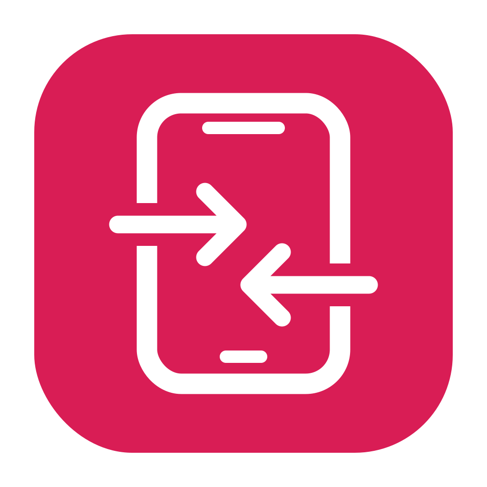
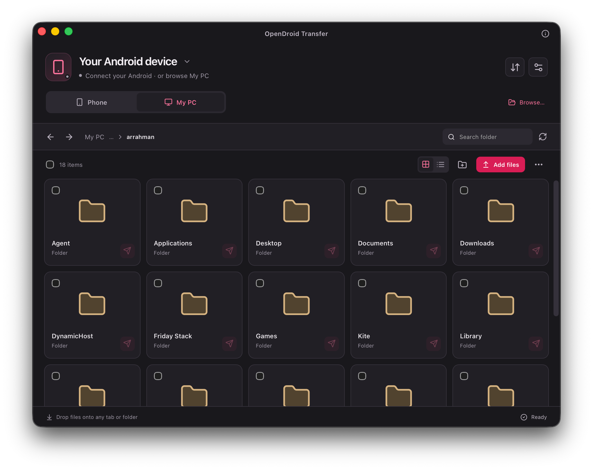
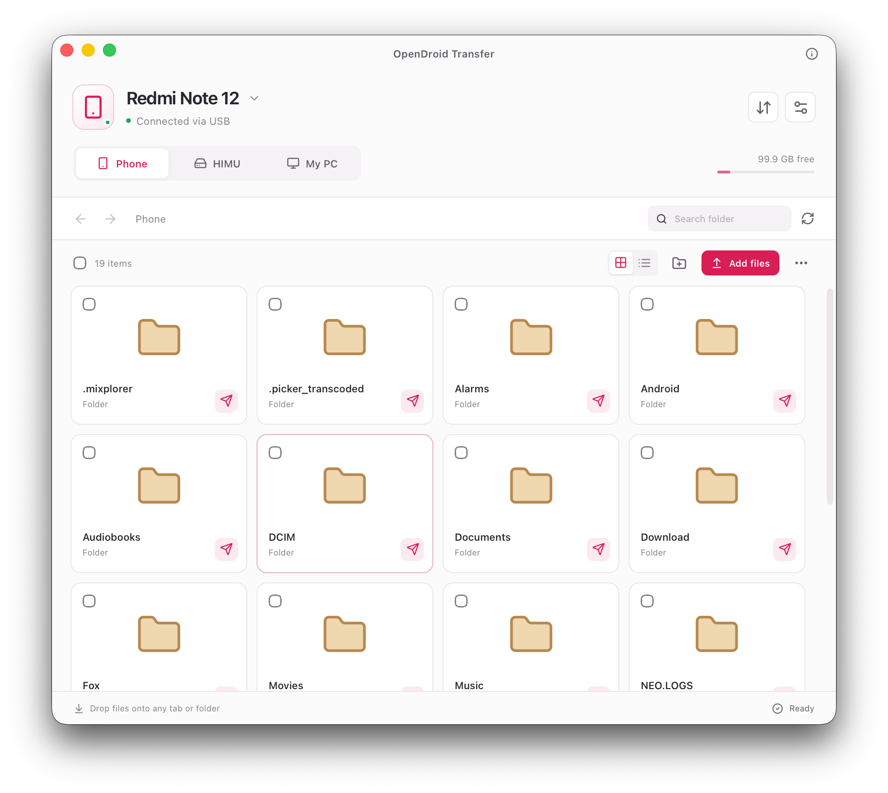
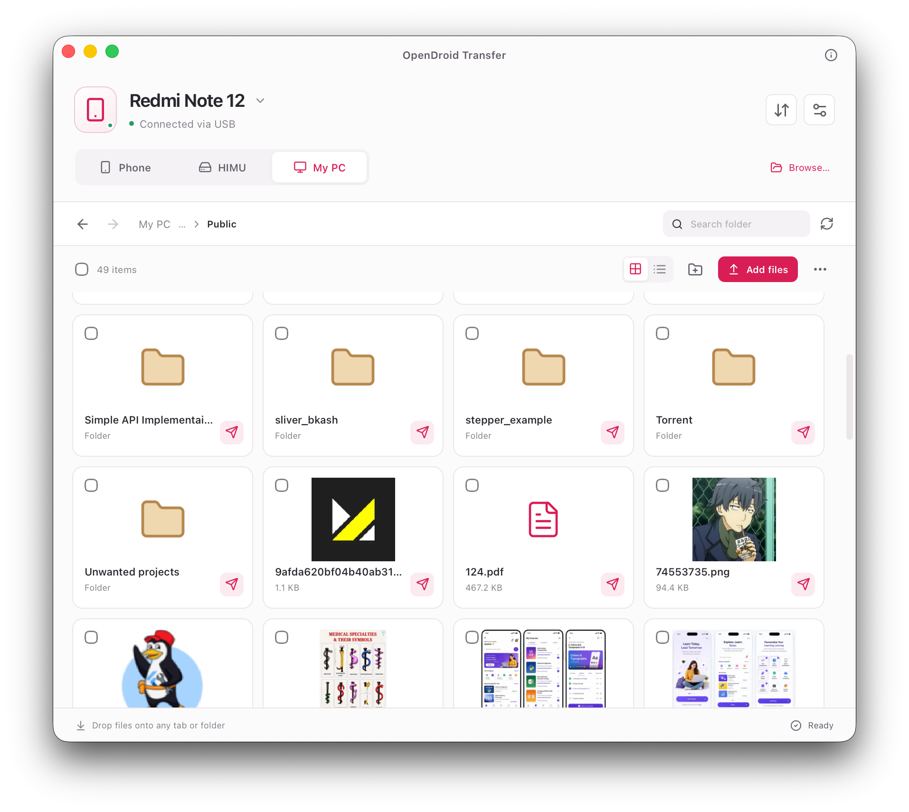

Take the direct route.
Transfer over USB without Wi-Fi or ADB. A focused connection for moving files between Android and macOS.
DIRECT USB TRANSFER
OpenDroidTRANSFER Get OpenDroidYour photos. Your projects. That very large video.
Move them over USB with a lightweight app built for the way you work.

A wired connection. A simpler workflow.
Big files belong here, too.
Small on your Mac. Ready for more.
LESS FRICTION. MORE FLOW.
From a quick photo drop to an entire project folder, keep your files moving between devices.
Transfer over USB without Wi-Fi or ADB. A focused connection for moving files between Android and macOS.
DIRECT USB TRANSFERMove files between your Mac and connected device with a familiar drag-and-drop workflow.
LESS CLICKINGTransfer individual files or batches larger than 4 GB, without an app-imposed file size cap.
ROOM FOR MOREJump between Phone, SD card, and My PC tabs. Keep internal memory and mounted storage within easy reach.
ONE CONNECTED WORKSPACECopy, paste, preview, and delete. Familiar file actions, brought together in a clean desktop interface.
BUILT FOR YOUR WORKFLOWAutomatic detection of connected MTP devices. Plug in, select File Transfer on your phone, and get to work.
NO COMPLEX SETUPA CLOSER LOOK
A considered interface that keeps your devices, storage, and file actions right where you need them.

Phone memory, SD cards, and your Mac—just a tab away.

Preview a file, copy a folder, or drop in something new.
FROM PLUGGED IN TO TRANSFERRED
Use a USB cable that supports data transfer.
Unlock your phone and select File Transfer / MTP in its USB options.
Open OpenDroid, choose your storage, and start moving files.
SMALL APP. OPEN POSSIBILITIES.
Make room for a simpler file-transfer routine.
Download for macOSSee available builds and release notes on GitHub.
Planned tap command
brew install --cask ardevcraft/tap/opendroidHomebrew distribution is being prepared. Use GitHub Releases to check current availability.
View the project on GitHub